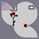

| ID | 9,374,186 |
|---|---|
| Forumer ID | 6,724 |
| Name | The Kitchen Sink |
| Rank | SuperCool |
| Main group | Members |
| Groups | Registered users |
| Joined | 2007-03-26T03:03:18Z |
| Last active | 2008-10-17T01:01:16Z |
| Posts | 228 |
| First post | 2007-03-26T03:09:30Z Whenever I complete a level, it says I cheated it. |
| Last post | 2008-10-02T20:01:55Z Crazy Userlevels |